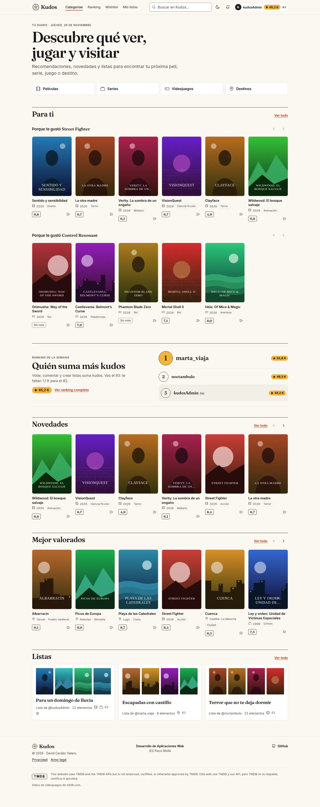
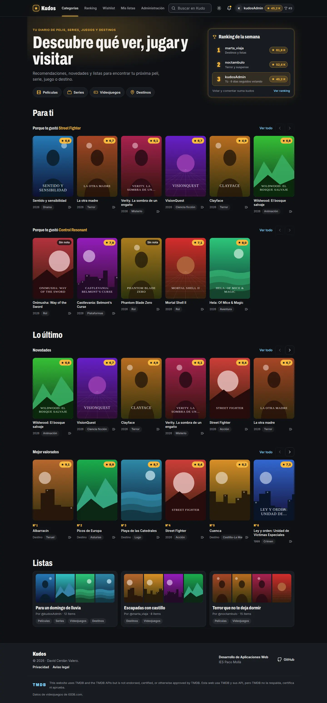
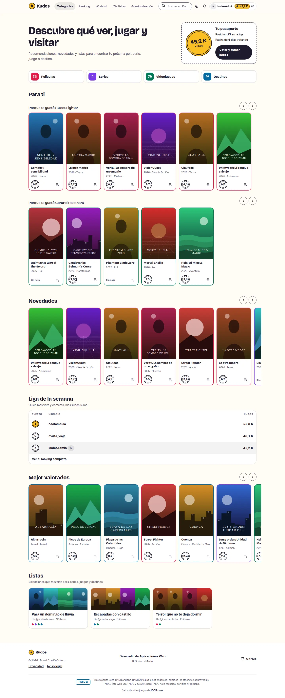

Maquetas del rediseño de Kudos
Tres direcciones con el mismo contenido: portada, ficha y votar. Cada maqueta tiene abajo a la derecha un panel para cambiar de pantalla, de tema (claro u oscuro) y a la vista de móvil. Son HTML estático: no tocan la aplicación.
Las imágenes son ilustraciones generadas, no pósteres reales. En la web de verdad, los pósteres y las fotos pondrán mucho más color.


Qué mirar al comparar
- ¿Se lee bien el título de cada tarjeta sin tapar la imagen?
- ¿Se ven los kudos de un vistazo en la cabecera y al votar?
- ¿Te gusta igual en claro que en oscuro?
- ¿Quedan bien juntas una peli, un juego y un destino (bloque «Listas»)?
- En el móvil, ¿es cómoda la pantalla de votar con el pulgar?
Las capturas de cada pantalla, a 390 y a 1440 px y en los dos modos, están en capturas/. La descripción de cada dirección está en direcciones.md.